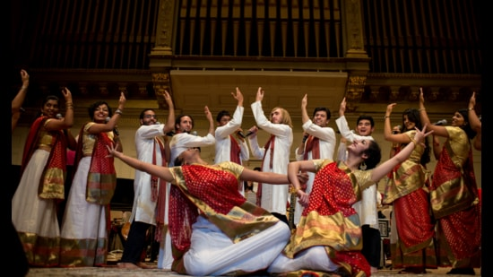

Berklee College of Music is a private music college in Boston, Massachusetts. It is the largest independent college of contemporary music in the world. Known for the study of jazz and modern American music,[6] it also offers college-level courses in a wide range of contemporary and historic styles, including rock, hip hop, reggae, salsa, heavy metal and bluegrass.[7] Berklee alumni have won 310 Grammy Awards, more than any other college, and 108 Latin Grammy Awards.[8] Other notable accolades for its alumni include 34 Emmy Awards, 7 Tony Awards, 8 Academy Awards, and 3 Saturn Awards.
In 1945, pianist, composer, arranger and MIT graduate Lawrence Berk founded Schillinger House, the precursor to the Berklee School of Music, after quitting his job at Raytheon.[10] Located at 284 Newbury St. in Boston's Back Bay, the school specialized in the Schillinger System of harmony and composition[11] developed by Joseph Schillinger. Berk had studied with Schillinger. Instrumental lessons and a few classes in traditional theory, harmony, and arranging were also offered.[10] At the time of its founding almost all music schools focused primarily on classical music, but Schillinger House offered training in jazz and commercial music for radio, theater, television, and dancing. At first, most students were working professional musicians. Many students were former World War II service members who attended under the G.I. Bill. Initial enrollment was fewer than 50 students,[12] but by 1949 there were more than 500 students.[13] In 1954, when the school's curriculum had expanded to include music education classes and more traditional music theory, Berk changed the name to Berklee School of Music, after his 12-year-old son Lee Eliot Berk, to reflect the broader scope of instruction.[14]